2023/6/4
2023/9/17
Roselia「Farbe」DAY2
2024/1/27
Ave Mujica 1st LIVE 「Perdere Omnia」
2024/3/9
MEGA VEGAS 2024
2024/6/8
Ave Mujica 2nd LIVE「Quaerere Lumina」神奈川公演
2024/7/7
Ave Mujica 2nd LIVE「Quaerere Lumina」爱知公演
2024/7/13
BILIBILI MACRO LINK 2024 DAY1
2024/7/14
BILIBILI MACRO LINK 2024 DAY2
2024/8/30
Animelo Summer Live 2024 -Stargazer-
2024/10/13
Ave Mujica 3rd LIVE「Veritas」
2024/11/23
ANIMAX MUSIX 2024 FALL
2024/12/14
Roselia「Stille Nacht, Rosen Nacht」
2024/12/15
Ave Mujica 4th LIVE「Adventus」
2025/1/25
リスアニ!LIVE 2025 SATURDAY STAGE
2025/2/2
Ave Mujica「KiLLKiSS」購入者限定フリーライブ

2025/4/26
MyGO!!!!!×Ave Mujica 合同ライブ「わかれ道の、その先へ」DAY1 : Petrichor

2025/4/27
MyGO!!!!!×Ave Mujica 合同ライブ「わかれ道の、その先へ」DAY2 : Geosmin

2025/5/5
JAPAN JAM 2025
2025/6/7
ANISAMA WORLD 2025 in MANILA
2025/7/12
BILIBILI MACRO LINK 2025 DAY2
2025/7/13
BILIBILI MACRO LINK 2025 DAY3
2025/7/26
Ave Mujica 5th LIVE「Nova Historia」DAY1
2025/7/27
Ave Mujica 5th LIVE「Nova Historia」DAY2
2025/8/16
SUMMER SONIC 2025 TOKYO
2025/8/30
Animelo Summer Live 2025 “ThanXX!”
2025/9/20
rockin'on presents ROCK IN JAPAN FESTIVAL 2025

2025/10/11
MyGO!!!!!×Ave Mujica 合同ライブ「わかれ道の、その先へ」上海追加公演 DAY1 : Petrichor

2025/10/12
MyGO!!!!!×Ave Mujica 合同ライブ「わかれ道の、その先へ」上海追加公演 DAY2 : Geosmin
2025/12/14
Ave Mujica 6th LIVE 「Ulterius Procedere」 东京公演
2025/12/26
ABEMA 日本アニメトレンド大賞 2025
2026/1/15
Ave Mujica 6th LIVE 「Ulterius Procedere」 大阪公演
2026/2/28
BanG Dream! 10th Anniversary LIVE「In the name of BanG Dream!」
2026/3/1
MyGO!!!!!×Ave Mujica ツーマンライブ「“moment / memory”」
2026/3/20
MEGA VEGAS 2026
2026/4/4
CENTRAL MUSIC & ENTERTAINMENT FESTIVAL 2026
2026/4/11
BanG Dream! Special LIVE in TAIPEI DAY1 : MyGO!!!!!×Ave Mujica「"moment / memory"」
2026/4/17
Ave Mujica LIVE TOUR 2026「Exitus」福冈公演
2026/4/26
Ave Mujica LIVE TOUR 2026「Exitus」大阪公演
2026/5/1
Ave Mujica LIVE TOUR 2026「Exitus」爱知公演
2026/5/4
Ave Mujica LIVE TOUR 2026「Exitus」东京公演

2026/6/19
Ave Mujica LIVE TOUR 2026「Exitus」-FINAL- DAY1

2026/6/20
Ave Mujica LIVE TOUR 2026「Exitus」-FINAL- DAY2
2026/7/12
BEAT AX -SUMMER EDITION 2026-

2026/8/8
Ave Mujica LIVE TOUR 2026「Exitus」台北追加公演 DAY1
2026/8/9
Ave Mujica LIVE TOUR 2026「Exitus」台北追加公演 DAY2
2026/8/14
SUMMER SONIC 2026 OSAKA
2026/8/16
SUMMER SONIC 2026 TOKYO
2026/10/24
Ave Mujica 7th LIVE「Virtus」DAY1
2026/10/25
Ave Mujica 7th LIVE「Virtus」DAY2

19 天后2026/12/1
EVANESCENCE 2026 JAPAN D1
20 天后
2026/12/2
EVANESCENCE 2026 JAPAN D2

22 天后2026/12/4
EVANESCENCE 2026 JAPAN D3
ANISAMA FUKUOKA 2027UNKNOWN
122 天后
2027/3/14
ANISAMA FUKUOKA 2027
Ave Mujica 8th LIVE「Discrimen Fati」DAY1UNKNOWN
198 天后
2027/5/29
Ave Mujica 8th LIVE「Discrimen Fati」DAY1
Ave Mujica 8th LIVE「Discrimen Fati」DAY2UNKNOWN
199 天后
2027/5/30
Ave Mujica 8th LIVE「Discrimen Fati」DAY2
212 天后
2027/6/12
ブシロード20周年記念ライブ DAY1
213 天后
2027/6/13